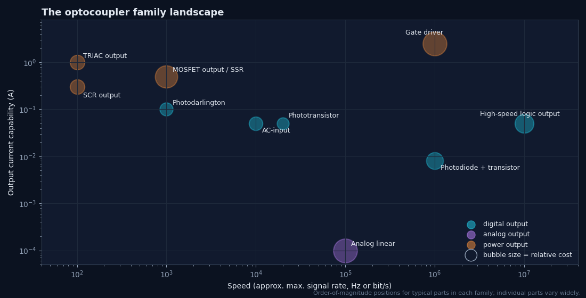
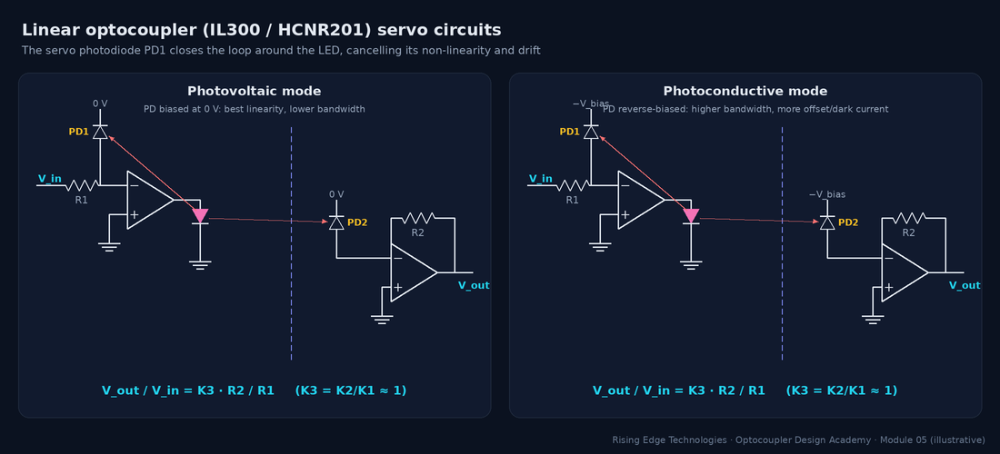
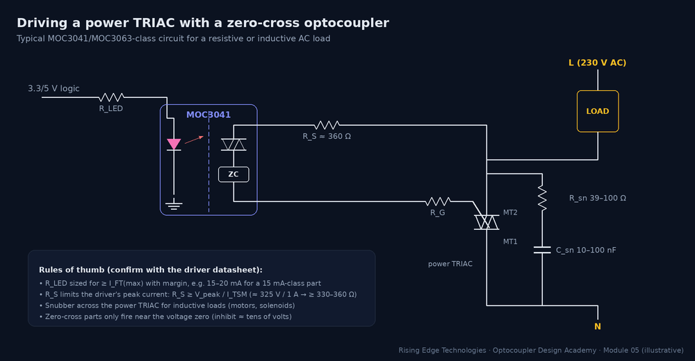
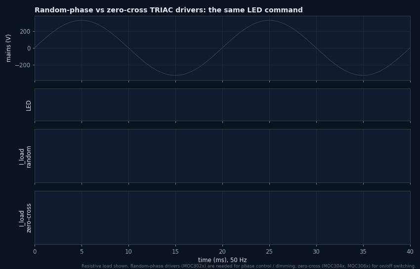
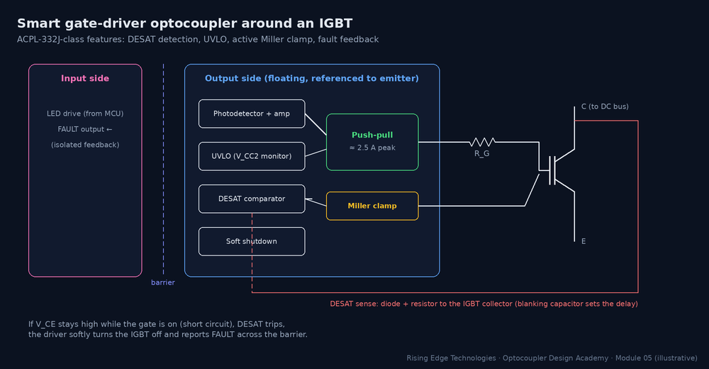
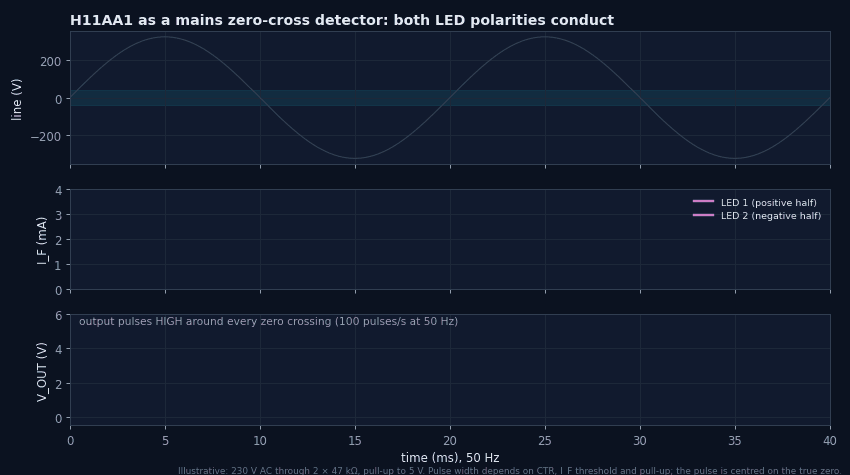

Different Types of Optocouplers
A guided tour of every output family with representative parts, characteristic curves, strengths, and traps: from the humble phototransistor to gate-driver couplers that swing amps, and analog linear devices that pass a faithful copy of a waveform across the barrier.
Illustrations and animations are original teaching drawings, not to scale. Values marked representative are typical of common parts; always confirm against the current datasheet or standard you design to.
Every optocoupler has the same input: an infrared LED. What differs is the output die, and that choice fixes speed, gain, how much current the output can handle, whether it needs a supply on the isolated side, and whether it switches DC, AC or an analog signal. Ten families cover almost every design:

The workhorse: an NPN phototransistor whose large base–collector junction is the light detector (Module 4). 6-pin parts bond the base out, so you can add RBE for speed and noise immunity. 4-pin parts do not. Output is an open collector (or emitter follower) that you load with a resistor.
Representative parts and key specs
| Part | Key specs (representative) | Notes |
|---|---|---|
| PC817 (4-pin DIP/SMD) | CTR 50–600 % (ranks A–D); IC ≤ 50 mA; tr/tf ≈ 4/3 µs typ at RL = 100 Ω; 5 kVrms | Lowest cost, huge second-source base |
| 4N35 (6-pin DIP) | CTR ≥ 100 % at 10 mA; base pin; VCEO 30–70 V (vendor-dependent) | Classic part, base available for RBE |
| TLP785 / TLP185 | CTR ranks similar to PC817; TLP185 in SO6 | Small-footprint alternatives |
Representative values from common vendor datasheets; ratings differ between manufacturers and ordering options. Always confirm on the exact part.
Typical applications
Digital inputs (24 V PLC), status signals, relay drivers, SMPS feedback (linear region, Module 10), any signal slower than ≈ 10–50 kbit/s.
Strengths
Cheap, robust, gain above 100 %, no output supply needed, huge choice of packages and ranks.
Traps
Slow (Miller effect); CTR spreads 10×, varies with temperature and ages; deep saturation adds storage time. Pick the rank and derate (Modules 4 and 9).
A phototransistor drives a second transistor on the same die, so the gains multiply. CTR of 500 % to several thousand percent lets tiny LED currents switch tens of milliamps. The price is speed and a high saturation voltage: a Darlington cannot pull its output below about one diode drop plus a VCE(sat).
Representative parts and key specs
| Part | Key specs (representative) | Notes |
|---|---|---|
| 4N32 / 4N33 | CTR ≥ 500 % at IF = 10 mA; VCE(sat) ≈ 1 V; turn-off tens to ≈ 100 µs | 6-pin, base available |
| H11B1 | CTR ≥ 500 % | Similar family, several vendors |
Representative values from common vendor datasheets; ratings differ between manufacturers and ordering options. Always confirm on the exact part.
Typical applications
Very low-power inputs (battery-sensing, µA-starved signals), slow relay or indicator drivers, where speed does not matter.
Strengths
Very high gain; drives loads directly from weak signals.
Traps
VCE(sat) ≈ 1 V may not be a valid logic low on 3.3 V systems; very slow; dark current is also multiplied by the huge gain, so hot leakage is large.
The detector is split: a photodiode reverse-biased from VCC generates photocurrent, and a separate output transistor amplifies it. Because the photodiode node barely moves, the Miller multiplication that slows a phototransistor disappears. Speed rises to about 1 Mbit/s, while CTR falls to tens of percent.
Representative parts and key specs
| Part | Key specs (representative) | Notes |
|---|---|---|
| 6N135 | CTR ≥ 7 % at IF = 16 mA; ≈ 1 Mbit/s; VCC 5 V | Base pin (pin 7) accessible |
| 6N136 | CTR ≥ 19 % at IF = 16 mA; ≈ 1 Mbit/s | Higher-CTR grade of 6N135 |
| HCPL-4502 class | Same topology, improved CMR options | Used in inverter feedback paths |
Representative values from common vendor datasheets; ratings differ between manufacturers and ordering options. Always confirm on the exact part.
Typical applications
Serial links up to ~1 Mbit/s, isolated feedback in motor drives, IPM fault lines, anywhere a phototransistor is too slow and a logic part too power-hungry.
Strengths
Fast for its class, linear photodiode current, less temperature-dependent than a phototransistor.
Traps
Low CTR needs higher IF (≈ 10–16 mA); needs a VCC on the output side; base pin picks up noise if not handled per the datasheet.
A photodiode feeds an integrated trans-impedance amplifier, comparator and logic output stage. Many parts put a transparent Faraday shield over the detector for common-mode immunity. The input is specified as an LED threshold current rather than CTR: above it, the output switches cleanly. Outputs are either open-collector (6N137, needs a pull-up) or totem-pole (TLP2361-class, drives the line directly). Some parts have an enable pin.
Representative parts and key specs
| Part | Key specs (representative) | Notes |
|---|---|---|
| 6N137 | 10 MBd; IF threshold ≤ 5 mA (recommend 6.5–15 mA); VCC 5 V; open-collector; enable pin | 0.1 µF bypass at the pins is mandatory |
| HCPL-2630 | Dual-channel 10 MBd; open-collector | No enable; two channels share one package |
| TLP2361 | ≈ 15 MBd class; totem-pole output; low-voltage VCC capable; SO6 | No pull-up needed; faster rising edges |
Representative values from common vendor datasheets; ratings differ between manufacturers and ordering options. Always confirm on the exact part.
Typical applications
Isolated UART, SPI (low rate), CAN/RS-485 transceiver isolation, fieldbus, PWM signals where timing matters.
Strengths
Clean logic output, ns-class propagation delays, threshold-type input insensitive to CTR ageing (until the LED falls below threshold).
Traps
Needs a regulated output supply and bypassing; standard (unshielded) grades have modest CMTI; pulse-width distortion and channel-to-channel skew limit the usable data rate (Module 6); leaving the enable pin floating near noisy traces causes glitches.
The trick behind a linear optocoupler is a second photodiode on the input side. The LED illuminates two matched photodiodes: PD1 (servo) on the input side and PD2 (output) across the barrier. An input op-amp adjusts IF until PD1’s current equals Vin/R1. That servo loop cancels the LED’s non-linearity, temperature drift and ageing. Because PD2 sees the same light, its current tracks PD1 with a ratio K3 = K2/K1 ≈ 1, and an output op-amp turns it back into a voltage.
Representative parts and key specs
| Part | Key specs (representative) | Notes |
|---|---|---|
| IL300 | K1 ≈ 0.007 typ; K3 ≈ 1 (sold in K3 bins); servo linearity in the 0.01 % class; bandwidth > 100 kHz | AlGaAs LED, DIP-8 |
| HCNR201 | K3 = 1 ± 5 %; low non-linearity; wide bandwidth | Tighter K3 than the HCNR200 grade |
Representative values from common vendor datasheets; ratings differ between manufacturers and ordering options. Always confirm on the exact part.
Typical applications
Isolated voltage and current sensing (DC bus, shunt amplifiers), isolated 4–20 mA loops, medical signal isolation, analog feedback where a digital isolator plus ADC is overkill.
Strengths
True analog isolation with excellent linearity and stability; the servo loop removes LED ageing from the transfer function (to first order).
Traps
Needs op-amps and supplies on both sides; K3 tolerance sets gain accuracy (trim or buy tight bins); photoconductive mode gains bandwidth but adds offset; the servo loop needs compensation to be stable.

- K1, K2 — photodiode current per LED current (≈ 0.5–1 %)
- K3 = K2/K1 — the transfer gain, set by photodiode matching, not by the LED
Worked example — 0–5 V isolated measurement
R1 = R2 = 50 kΩ, K1 = 0.007, K3 = 1.00.- Full-scale PD1 current 5 V / 50 kΩ = 100 µA.
- Required IF = 100 µA / 0.007 ≈ 14.3 mA, within a 20 mA design limit.
- Vout = 1.00 × (50k/50k) × Vin = Vin. With a K3 bin of ±5 %, expect 4.75–5.25 V at full scale unless trimmed.
Instead of amplifying photocurrent, the detector die stacks many tiny photovoltaic cells in series. Together they generate several volts, enough to charge the gates of two output MOSFETs through a control circuit that also speeds turn-off. The MOSFETs are connected source-to-source, so the output blocks and conducts in both polarities: an electronic replacement for a small mechanical relay contact.
Representative parts and key specs
| Part | Key specs (representative) | Notes |
|---|---|---|
| AQY210 family (PhotoMOS) | Form A (normally open); load voltage and current from tens of volts/amps to hundreds of volts/tens of mA across the range | Many voltage/RON variants |
| TLP222 family | Form A photorelay; DIP4/SOP4 variants | Similar concept |
| General SSR trade-off | Higher voltage rating → higher RON (ohms to tens of ohms); off-state leakage nA–µA; turn-on ≈ 0.1–few ms | Form B (normally closed) versions exist |
Representative values from common vendor datasheets; ratings differ between manufacturers and ordering options. Always confirm on the exact part.
Typical applications
Replacing signal relays: measurement multiplexers, battery-stack sensing, telecom hook switches, isolated switching of small AC or DC loads, alarm contacts.
Strengths
No moving parts or contact bounce, AC and DC switching, very low drive current, silent, long life, tiny off-state leakage.
Traps
RON causes voltage drop and heating (and rises with temperature); slow (ms) switching; limited surge capability; off-state capacitance can couple fast signals; not a safety isolator for the load path itself.
A light-activated bidirectional thyristor (photo-TRIAC) that is not meant to carry the load current itself. It fires the gate of an external power TRIAC. Random-phase drivers (MOC302x) fire the moment the LED turns on, which is needed for phase-angle control (dimmers, soft starters). Zero-cross drivers (MOC304x, MOC306x) include an inhibit circuit that only allows firing when the line voltage is near zero, typically within a few tens of volts. That drastically reduces inrush current and EMI for on/off switching of resistive and inductive loads.
Representative parts and key specs
| Part | Key specs (representative) | Notes |
|---|---|---|
| MOC3021 / 22 / 23 | Random-phase; VDRM 400 V; IFT 15 / 10 / 5 mA max; ITSM ≈ 1 A peak | Phase control, inductive loads |
| MOC3041 / 42 / 43 | Zero-cross; VDRM 400 V; IFT 15 / 10 / 5 mA max | On/off switching on 120 V lines |
| MOC3061 / 62 / 63 | Zero-cross; VDRM 600 V; IFT 15 / 10 / 5 mA max | Preferred on 230/240 V lines |
| Static dV/dt (typ) | Random-phase parts ≈ 10 V/µs class; zero-cross parts hundreds to > 1000 V/µs | Check your exact part |
Representative values from common vendor datasheets; ratings differ between manufacturers and ordering options. Always confirm on the exact part.
Typical applications
Heater and lamp control, solenoid valves, AC contactor coils, fan speed (random-phase), SSR modules.
Strengths
Very simple mains switching from logic; zero-cross versions cut EMI and inrush; the driver provides the mains isolation.
Traps
Zero-cross parts cannot do phase control; inductive loads need snubbers (the voltage jumps when the TRIAC commutates at current zero, and the current lags the voltage); 400 V parts are marginal on 230 V lines with surges; snubber leakage keeps a small current in the load when “off”.


A light-activated silicon-controlled rectifier. Once triggered, it latches and keeps conducting until its current falls below the holding current, regardless of the LED. It conducts in one direction only, so it suits DC circuits (where it acts as a latch that must be reset by interrupting the current) or half-wave AC control. A gate pin allows sensitivity adjustment with a gate–cathode resistor.
Representative parts and key specs
| Part | Key specs (representative) | Notes |
|---|---|---|
| H11C1 / H11C4 class | Photo-SCR; VDRM 200–400 V class; a few hundred mA on-state | Gate pin for sensitivity/dV/dt tuning |
| 4N40 | Photo-SCR, 400 V class | Older family, still available from some vendors |
Representative values from common vendor datasheets; ratings differ between manufacturers and ordering options. Always confirm on the exact part.
Typical applications
Crowbar and latching alarm circuits, triggering larger SCRs, half-wave AC control, DC latching relays.
Strengths
Latching memory without extra logic; high surge capability for its size; simple.
Traps
Does not turn off on DC by itself; one direction only; sensitive to dV/dt false triggering (use RGK). For full-wave AC use a TRIAC driver instead.
A photodiode and amplifier drive a push-pull output stage powered from an isolated supply referenced to the power switch’s emitter or source. It can source and sink amps of peak gate current directly into an IGBT or MOSFET gate. Smart versions add under-voltage lockout (UVLO), desaturation (DESAT) short-circuit detection with soft shutdown, an active Miller clamp and an isolated fault signal back to the controller.
Representative parts and key specs
| Part | Key specs (representative) | Notes |
|---|---|---|
| HCPL-3120 | ≈ 2.5 A peak output; VCC 15–30 V; UVLO; propagation delay ≤ 0.5 µs class | The classic IGBT driver |
| TLP250 | ≈ 1.5 A peak output class; DIP8 | Low-cost alternative |
| ACPL-332J | ≈ 2.5 A; DESAT + soft shutdown, UVLO, active Miller clamp, fault feedback; SO16 wide | Integrated protection for IGBT modules |
| CMTI | Tens of kV/µs minimum for gate-driver grades; newer parts much higher | Essential for fast SiC/GaN edges |
Representative values from common vendor datasheets; ratings differ between manufacturers and ordering options. Always confirm on the exact part.
Typical applications
Motor-drive and inverter IGBT/MOSFET gates, solar inverters, UPS, welders, induction heating.
Strengths
Isolation and gate drive in one part; built-in protection; high CMTI; reinforced-insulation packages available.
Traps
Needs a floating supply (bootstrap or isolated DC-DC) with a negative rail for hard-switched IGBTs; bypass the output supply with low-ESR capacitors at the pins; propagation-delay mismatch between high and low side sets dead time; check CMTI against your real dV/dt (SiC can exceed 50–100 kV/µs).

Two LEDs connected in anti-parallel light the same phototransistor, so the part responds to input current of either polarity. With a series resistor from the mains, the output is on for most of each half-cycle and briefly turns off near each zero crossing. That makes it a simple mains-presence or zero-cross detector, and a polarity-insensitive input for AC/DC signals.
Representative parts and key specs
| Part | Key specs (representative) | Notes |
|---|---|---|
| H11AA1 | Anti-parallel LEDs; CTR ≥ 20 % at IF = ±10 mA; symmetry spec between the two LEDs | The classic zero-cross detector |
| PC814 / TLP620 class | AC-input phototransistor couplers in 4-pin/SMD packages | Compact alternatives |
Representative values from common vendor datasheets; ratings differ between manufacturers and ordering options. Always confirm on the exact part.
Typical applications
Mains zero-cross detection for TRIAC phase control, line-presence and phase-loss detection, AC/DC universal 24 V inputs.
Strengths
Detects both half-cycles with one part; no bridge rectifier; simple.
Traps
The input resistor dissipates real power on mains (≈ 0.5 W for 230 V through 94 kΩ) and must be voltage-rated or split into series resistors; the zero-cross pulse is offset and widened by the LED threshold; CTR mismatch between the LEDs makes alternate pulses unequal.

The detector die defines the family
Same IR LED in every part; phototransistor, Darlington, photodiode, logic IC, PV array, thyristor or driver IC on the other side.
Speed vs gain
Phototransistor tens of kHz, Darlington ~kHz, 6N136 ~1 Mbit/s, logic parts 10+ Mbit/s. Gain falls as speed rises.
Threshold vs CTR
Logic and driver parts are specified by LED threshold current, not CTR; ageing matters only when IF approaches the threshold.
Linear = servo
IL300/HCNR201 use a second photodiode to cancel LED non-linearity: Vout/Vin = K3·R2/R1.
SSR for relays
PhotoMOS switches AC or DC with no contacts; watch RON, speed and leakage.
TRIAC vs SCR
TRIAC drivers for full-wave AC (zero-cross for on/off, random-phase for dimming); SCR latches and conducts one way.
Gate drivers protect
Push-pull amps of drive, UVLO, DESAT, Miller clamp; check CMTI against real dV/dt.
AC input detects zero
Anti-parallel LEDs respond to both polarities; resistors must handle mains power and voltage.
Design checklist
Tick items as you review a design. Your ticks are saved in this browser only; use your browser’s print function for a sign-off copy.
Four parts: multiple choice, true/false, a matching exercise and engineering scenarios. Score 80 % on the multiple choice to pass the module.